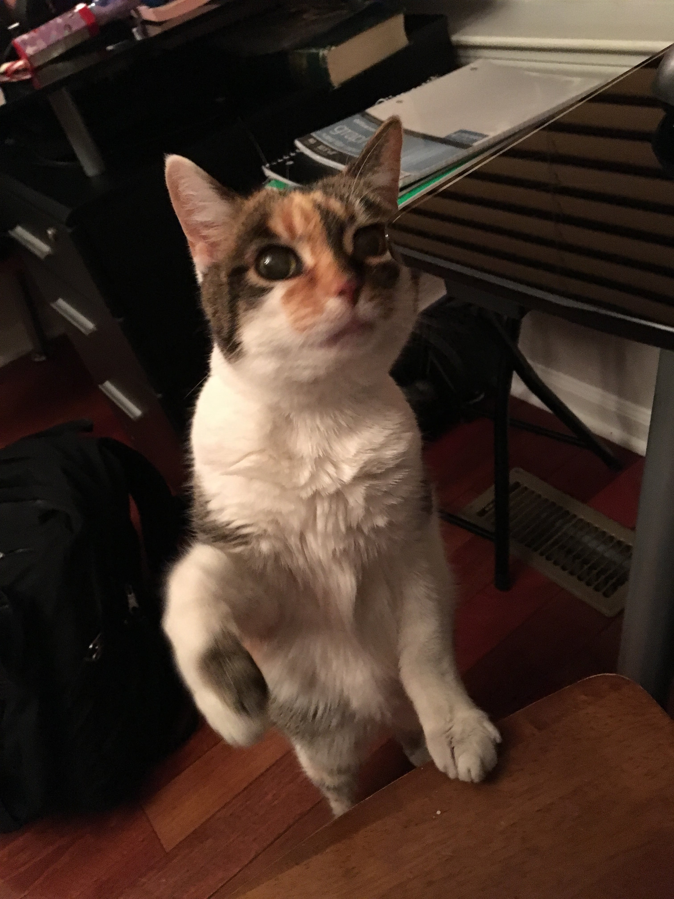
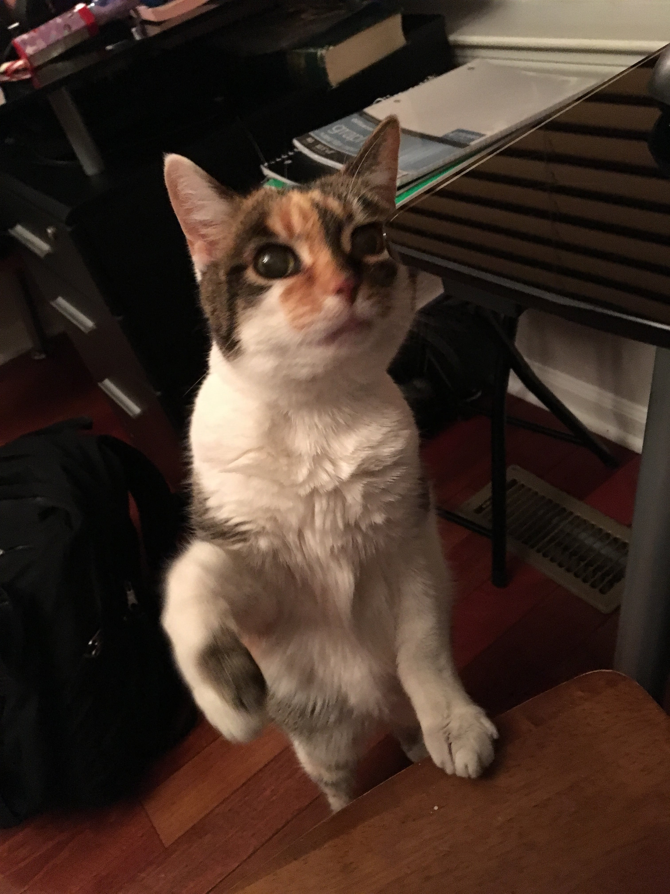
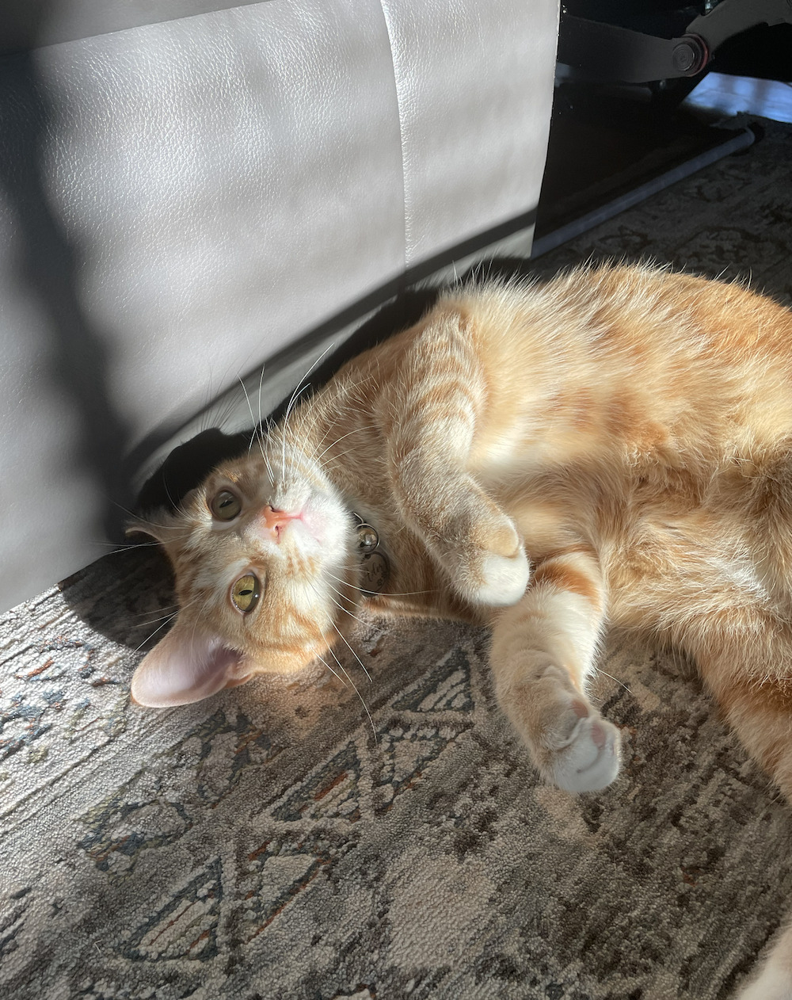

Biscuit

Biscuit is a 2 year old shiba inu dog. Shiba inus are energetic and playful dogs. Biscuit enjoys running outside in circles and then laying down in the grass in the sun for hours. He also likes going for occasional swims.
As energetic as Biscuit is, he also likes to relax. He loves to sleep in his dog bed and watch Netflix with his owners. His favorite treat is apples.
Photo Gallery


Likes
- Going for walks
- Swimming
- Apples
Lucy

Lucy is a 17-year-old calico that I've had since I was 5, she has pretty much grown up with me my whole life. Even though she's old she's still kickin' it and enjoys running around the house at 4am.
Her favorite foods include anything but her kibble. She enjoys sunbathing and long naps, along with lots of petting. However, she hates getting her stomach rubbed.
Photo Gallery


Likes
- Sleeping
- Food
- Her bed
Molly
Molly is an 18 year old calico cat. She prefers spending her days lounging on the couch or curled up sleeping over a vent (or anything warm). Occasionally, she'll go outside and attempt to hunt birds or rats (sometimes successful which is terrifying).
Molly's favorite habit is to brush against people's legs, especially during dinner when everyone is seated around a table. She's an attention seeker, always meowing to get as many pets and head rubs as she possibly can.
Photo Gallery
 


Milktea

Milktea is a Scottish fold with a personality of a princess. She loves her veggies and refuses to eat anything dropped on the ground. She makes it clear when she has a demand of any sort by complaining in a loud, distinguished manner. If what she says could be translated, it probably would be, “This is atrocious, the water container has been empty for the 3rd time this week. I want to see the manager.”
Despite her cuteness and royalty, she actually suffers from a genetic disorder intentionally brought upon by humans. I highly advise against keeping a Scottish fold because they are in constant pain when they reach around 2 years old. Cartilage accumulates around her paw joints and tail joints and it becomes painful for them to even walk. She is living evidence of human's cruelty of breeding animals to look pretty while sacrificing the animals' health.
Photo Gallery


Likes
- She loves individual corn kernels served on human hands
- She enjoys sitting royally on suitcases to claim ownership of her humans
- She prefers to be alone and sit on soft surfaces in her free time
Ador

Ador is 1 year old. He is a very vocal cat who loves to be petted on his head. Ador enjoys wrestling with his sister Maya, who is a few months older than him. During Ador's free time, he enjoys looking out the window to see birds and occasionally squirrels in our neighborhood who stop by to say hi to him!
Ador is also very shy and timid. He doesn't like to be in social situations and tends to hide behind a couch or run down to the basement. Though, once you get to know Ador, he is very affectionate and will often lick your hand when you pet him. Ador's favorite snack flavors are chicken and turkey, and if you give him enough treats he will thank you for it vocally with his meows!
Photo Gallery



Likes
- Dry treats
- Cuddling
- Sleep